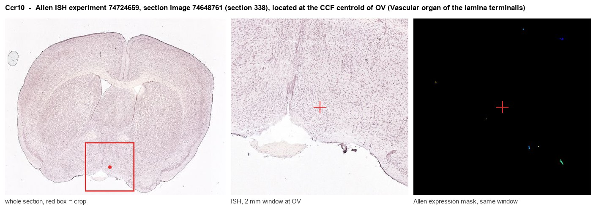
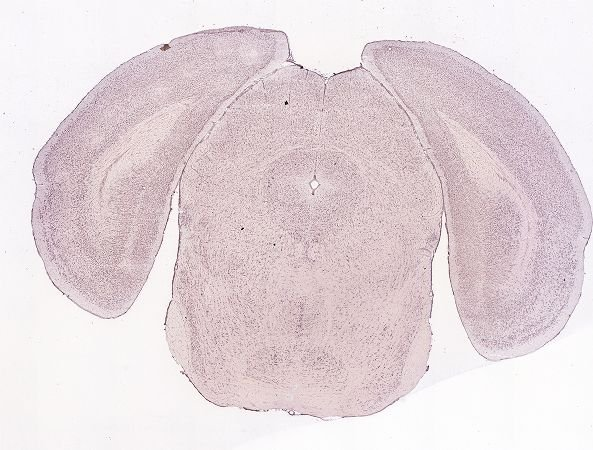
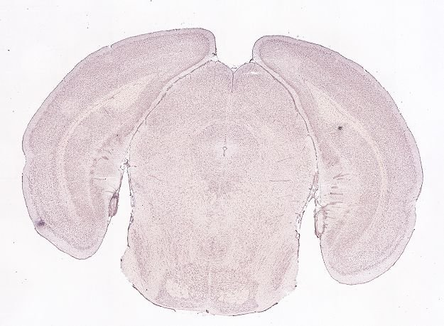
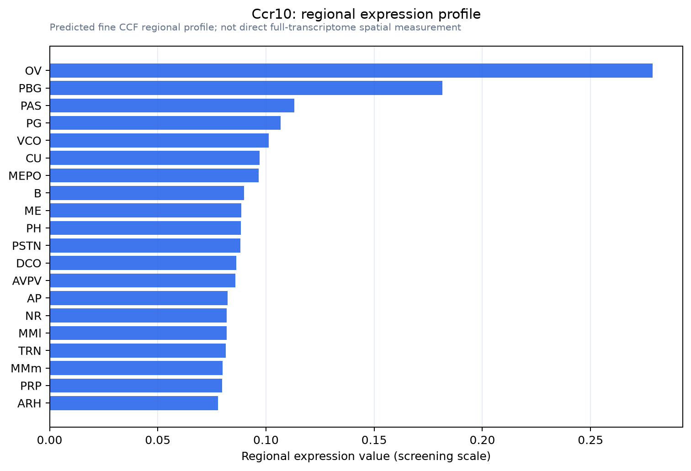

Ccr10
C-C chemokine receptor type 10 (C-C CKR-10) (CC-CKR-10) (CCR-10) (Chemokine C-C receptor 9) (G protein-coupled receptor 2)
Spatial tier: STRICT_EXCLUSIVE · Class: GPCR · Top region: OV (Vascular organ of the lamina terminalis) · Positive regions: 10/554
Function in OV: evidence, prediction, innovation
- Gene function
- Ccr10 encodes CC chemokine receptor 10, a Gi-coupled GPCR for CCL27 (CTACK) and CCL28 (MEC), signalling via G protein, beta-arrestin and PI3K/Akt. Its known biology is immune-cell homing to skin and mucosa plus invasive tumour signalling.
- Region function
- The vascular organ of the lamina terminalis is a barrier-free circumventricular organ reading plasma osmolality, sodium, angiotensin II and inflammatory mediators to drive thirst, vasopressin release, sympathetic tone and fever.
- Published in this region
- none No region-specific literature found. Closest are CCR10 mRNA in brain parenchyma, changing in mouse hippocampal CA1 and dentate gyrus during and after pilocarpine-induced status epilepticus (Liu et al. 2007), and CCR10 upregulation in human glioma, where CCL27-CCR10 drives Akt-dependent proliferation and invasion (Chen et al. 2014).
- Predicted function
- Prediction: the barrier-free OVLT could let circulating CCL27/CCL28 act through CCR10 as a humoral immune signal on thirst and autonomic neurons. Gi inhibition predicts agonist infusion suppresses OVLT firing and reduces angiotensin-driven drinking and vasopressin release, while OVLT-restricted Ccr10 deletion exaggerates fluid intake and sympathetic responses to inflammation.
- Innovation
- ★★★★★ 5/5 Nothing is published on CCR10 in any circumventricular organ, yet OVLT is a key homeostatic sensor with good circuit tools.
- Tools
- No neuroscience-validated driver line; recombinant CCL27/CCL28, anti-CCR10 antibodies and Ccr10 knockout/reporter mice exist in immunology; no selective antagonist. OVLT access uses Nr5a1-, Nxph4- or Adcyap1-based Cre strategies plus stereotaxic AAV.
- References
Direct evidence located at the region

Allen ISH experiment 74724659, section image 74648761 (section 338): the section that contains the CCF centroid of Vascular organ of the lamina terminalis according to the Allen image-to-atlas alignment (reference_to_image), with a 2 mm window around that point. Left: whole section, red box = window. Middle: ISH signal. Right: Allen's expression-mask view of the same window. open this image in the Allen viewer
Direct spatial evidence



Regional expression figure

Predicted WMB × fine-CCF profile; not direct full-transcriptome spatial measurement.
Spatial profile
Evidence and specificity
- Evidence status
- PREDICTED_FINE
- Direct sources
- None; predicted localization only
- Exclusive threshold
- 12 positive regions out of 554
- Spatial specificity
- 0.295
- Top-region fraction
- 0.082
- Filter status
- PASS
Interpretation limits
- Cell-type-to-region projection is imputed expression, not direct spatial measurement.
- Adult reference atlases do not establish stability across age, sex, strain, state, or disease.
- Transcript abundance does not guarantee protein abundance or genetic-tool performance.